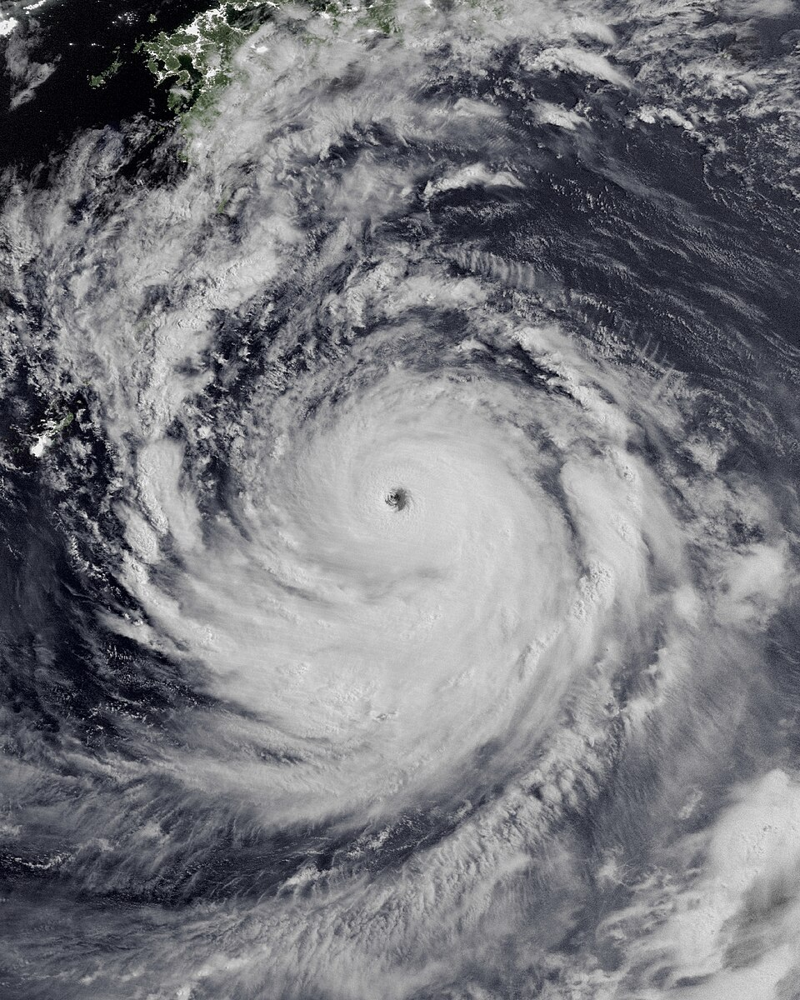
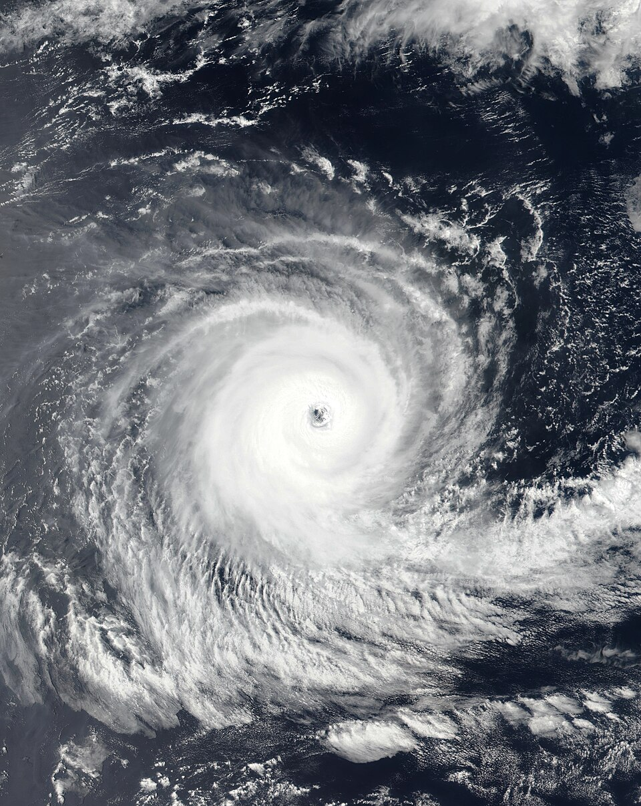

Planetarische Zirkulation
Geographie | Klasse 10
M1
Taifun
(Nordhalbkugel)

Taifun Nanmadol über Südostasien am 16. September 2022
M2
Zyklon
(Südhalbkugel)

Zyklon Darian nahe Australien am 13. Dezember 2022